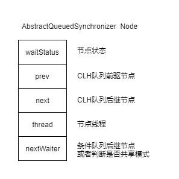
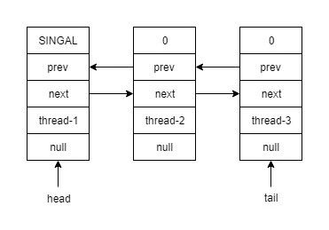
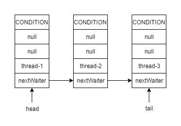

AbstractQueuedSynchronizer是JDK并发包里面很多同步类的基础框架.在简单了解了自旋锁和CLH锁之后再来了解下JDK里面的实现.
队列节点
队列的节点定义代码如下
static final class Node {
static final Node SHARED = new Node();
static final Node EXCLUSIVE = null;
// 线程取消获取锁
static final int CANCELLED = 1;
// 后继节点需要被唤醒
static final int SIGNAL = -1;
// 线程在条件队列中
static final int CONDITION = -2;
// 后续结点会传播唤醒的操作,共享模式下起作用
static final int PROPAGATE = -3;
//节点状态
volatile int waitStatus;
//同步队列前驱节点
volatile Node prev;
//同步后继节点
volatile Node next;
// 条件队列后继节点
Node nextWaiter;
}
包含了几个状态相关的常量和节点状态,以及指向其他节点的引用.整理成图比较好理解.

AQS定义了两个队列,一个是普通的CLH锁实现的队列(Sync Queue),一个是条件队列(Condition Queue).
// 队列头部指针
private transient volatile Node head;
//队列尾部指针
private transient volatile Node tail;
//锁状态
private volatile int state;
AQS 使用了2个成员变量一个指向队头,一个指向队尾.另外使用一个成员变量state来表示锁的当前状态.
同步队列
如果线程获取锁失败则进入同步对列,acquire参数为state状态值
public final void acquire(int arg) {
if (!tryAcquire(arg) &&
acquireQueued(addWaiter(Node.EXCLUSIVE), arg))
selfInterrupt();
}
final boolean acquireQueued(final Node node, int arg) {
boolean failed = true;
try {
boolean interrupted = false;
//自旋
for (;;) {
//循环获取前驱节点
final Node p = node.predecessor();
// 如果是队首节点 且获取锁成功则出队并返回
// 自旋只在队首节点尝试去获取锁
if (p == head && tryAcquire(arg)) {
setHead(node);
p.next = null; // help GC
failed = false;
return interrupted;
}
// 此处会把队首节点设置为SINGAL
if (shouldParkAfterFailedAcquire(p, node) &&
parkAndCheckInterrupt())
interrupted = true;
}
} finally {
if (failed)
cancelAcquire(node);
}
}
// 创建队列节点并入队
private Node addWaiter(Node mode) {
Node node = new Node(Thread.currentThread(), mode);
// Try the fast path of enq; backup to full enq on failure
Node pred = tail;
if (pred != null) {
node.prev = pred;
if (compareAndSetTail(pred, node)) {
pred.next = node;
return node;
}
}
enq(node);
return node;
}
//入队操作
private Node enq(final Node node) {
for (;;) {
Node t = tail;
if (t == null) { // Must initialize
if (compareAndSetHead(new Node()))
tail = head;
} else {
node.prev = t;
if (compareAndSetTail(t, node)) {
t.next = node;
return t;
}
}
}
}
一个完整的同步队列如下图所示,队首的节点会被标记为SINGAL状态.在出队的时候会重新检查其后继节点.

条件队列
在使用ReentrantLock的时候有介绍到Condition,它的实现是AQS一个叫ConditionObject的对象.
public class ConditionObject implements Condition, java.io.Serializable {
private static final long serialVersionUID = 1173984872572414699L;
/** First node of condition queue. */
private transient Node firstWaiter;
/** Last node of condition queue. */
private transient Node lastWaiter;
....
}
其中的firstWaiter和lastWaiter定义了条件对列的队首引用和队尾引用.在使用的时候lock.newCondition()则创建了一个队列.其中的实现方式和同步队列也比较相似.
